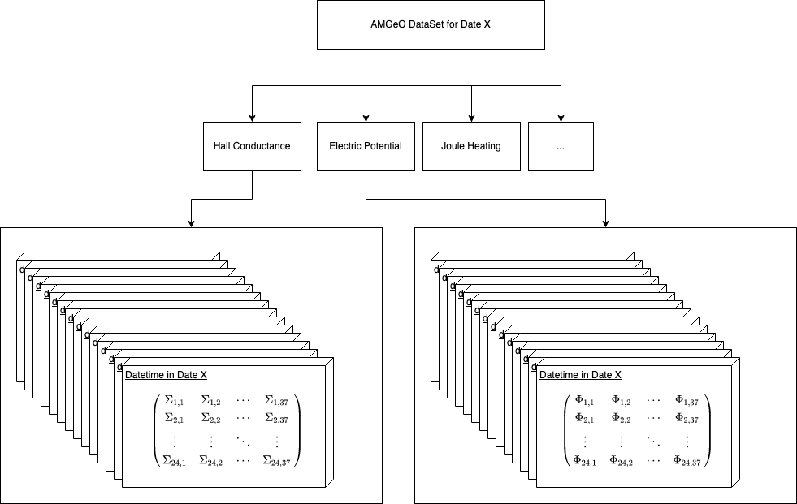

AMGeO 2.0: Crafting an API for Geospace Data Scientists
Contents
AMGeO 2.0: Crafting an API for Geospace Data Scientists#

Purpose#
The purpose of this notebook is to introduce Geospace scientists to the new AMGeO 2.0 API, as well as demonstrate functionality with other popular python packages.
Technical contributions#
Introduces geospace researchers to AMGeO’s new API
Showcases power of using Xarray to enable research of multidimensional datasets
Gives examples of using the API with various other Python packages, including
Numpy
Matplotlib
Apexpy
Cartopy
Methodology#
The Assimilative Mapping of Geospace Observations (AMGeO) is a data science tool for the geospace science community that automates labor-intensive data acquisition and processing, combining observations from various sensors into assimilative maps of the high-latitude ionosphere. While AMGeO offers a highly configurable toolset, it currently requires both domain expertise and familiarity with Python to use it effectively for scientific research.
To remove hurdles for novice users and empower all AMGeO users, we have recently introduced a new Application Programming Interface (API) focused on enhanced user-experience, including better compatibility with Jupyter Notebooks, improved data manipulation with Xarray and more flexible data generation. This notebook will demonstrate the functionality offered by the new API and how to use AMGeO in conjunction with other popular Python research tools in order to accelerate geospace data science processes.
Funding#
AMGeO is supported by the NSF EarthCube grants ICER 1928403 to the University of Colorado Boulder, ICER 1928327 to the Virginia Tech, and ICER 1928358 to the Johns Hopkins University Applied Physics Laboratory.
Keywords#
keywords=[“AMGeO”, “Xarray”, “Python”, “API”, “Geospace”]
Citation#
Willem Mirkovich, Liam Kilcommons, Tomoko Matsuo, 2022. AMGeO, Xarray, Python, API, Geospace. Accessed 4/15/2022 at https://github.com/willemmirkovich/Earthcube-Meeting-2022
Work in progress#
While this notebook is in a complete state, these are some notable additions that would be nice to add:
Apexpy example of converting to base vectors
Cartopy example of time-series
Cartopy example of vector plots
Suggested next steps#
Please get started with AMGeO here, we would love any feedback to continue improving our software.
Acknowledgements#
We would like to thank our data providers:
Setup#
Library imports#
Below are the necessary libraries needed to run this notebook:
Python 3.8
AMGeO 2.0.2 (comes with Matplotlib, Numpy, Xarray)
Apexpy 1.0.1
Cartopy 0.20.2
# Ignore uunecessary warnings from AMGeO dependencies
import warnings
warnings.filterwarnings('ignore')
# AMGeO's API class
from AMGeO.api import AMGeOApi
# python's datetime module
from datetime import datetime, date
# matplotlib tools
import matplotlib.pyplot as plt
import numpy as np
# cartopy
import cartopy.crs as crs
# apexpy
from apexpy import Apex
Solar wind data files will be saved to /home/jovyan/.local/share/nasaomnireader
------------IMPORTANT----------------------------
Unable to import spacepy. Will fall back to
using Omni text files, which may have slightly
different data and incomplete metadata
-------------------------------------------------
Parameter definitions#
During the duration of this notebook, there are some commone placeholder variables that will be used.
api will be used to store AMGeO’s API instance
api = AMGeOApi()
api
AMGeO API instance
current configuration: default
current output directory: /workspaces/Earthcube-Meeting-2022/amgeo_out
controller will be used to generate and load assimilative maps using AMGeO. This will be described in more detail in Creating an AMGeO controller
controller = api.get_controller()
controller
Default AMGeO Controller
Creates Assimilative Maps using SuperMAG and SuperDARN observations
Does not predict magnetic potential nor field-aligned current
Data import#
Since this notebook is a technical overview of AMGeO’s new API, all Data used will be imported/generated during the course of the Data Processing section.
To learn more about AMGeO and the data we generate, please go to our website
Data processing and analysis#
AMGeO’s new API#
AMGeO’s 2.0 Release comes with a fleshed out Application Programming Interface (API) for easier generation/loading of Assimilative Maps of GeoSpace Observations (AMGeO).
The development of this API had two main goals in mind:
Simple and functional classes/objects to generate/manipulate/load AMGeO’s main data product
Interopability with various Python scientifict packages, such as Numpy, Xarray, Scipy, as well as popular geospatial packages like ApexPy, CartoPy
Creating an AMGeO API instance#
Here, we can create an AMGeO API instance, and get various details as to a default API instance
api = AMGeOApi()
api
AMGeO API instance
current configuration: default
current output directory: /workspaces/Earthcube-Meeting-2022/amgeo_out
Setting our output directory for AMGeO data#
When running AMGeO, a local file system directory will be selected to store your assimilative maps. By default, AMGeo will use ~/amgeo_v2_ouptput
api.get_output_dir()
'/workspaces/Earthcube-Meeting-2022/amgeo_out'
But, if you want to specify another directory, you can set this in the API instance using set_output_dir
api.set_output_dir('./amgeo_out')
api.get_output_dir()
'/workspaces/Earthcube-Meeting-2022/amgeo_out'
Creating an AMGeO controller#
To generate assimilative maps, you will have to load specific settings from AMGeO. Conveniently, AMGeO’s new API allows for a simple way to load AMGeO’s default settings using a controller.
To create a controller instance, you can call get_controller on an API instance
controller = api.get_controller()
controller
Default AMGeO Controller
Creates Assimilative Maps using SuperMAG and SuperDARN observations
Does not predict magnetic potential nor field-aligned current
As observed, calling get_controller returns an Default AMGeO Controller, that is able to both create and load assimilative maps using AMGeO’s default settings.
Generating AMGeO maps#

Now that we have a controller instance, we can create assimilative maps by calling the generate method on our controller.
This method takes both a hemisphere and a date argument.
controller.generate supports multiple different ways of generating maps based on dates/datetimes:
A single datetime
Will generate data for a specific date and time
controller.generate(datetime(YYYY, MM, DD, hh, mm, ss), 'N' | 'S')
A single date
Will generate data for 5 min slices over the entire date provided Ex: date(2013, 5, 5) => datetime(2013, 5, 5, 0, 2, 30), datetime(2013, 5, 5, 0, 7, 30), …
controller.generate(date(YYYY, MMMM, DD), 'N' | 'S')
A list of dates/datetimes
This will handle each element within the list on a case by case basis, in a bulk job
controller.generate([ datetime(YYYY, MM, DD, hh, mm, ss), date(YYYY, MM, DD), ... ], 'N' | 'S')
For example, if we wanted to generate maps for dates:
January 6th, 2013 16:30:00
January 6th, 2013 17:30:00
February 6th, 2013 12:30:00
February 6th, 2013 13:30:00
and on the Northern hemisphere, we can call generate with …
dts = [
datetime(2013, 1, 6, 16, 30, 0), # January 6th, 2013 16:30:00
datetime(2013, 1, 6, 17, 30, 0), # January 6th, 2013 17:30:00
datetime(2013, 2, 6, 12, 30, 0), # February 6th, 2013 12:30:00
datetime(2013, 2, 6, 13, 30, 0) # February 6th, 2013 13:30:00
]
# hemisphere
h = 'N'
controller.generate(dts, h)
Data requested for 2 day(s)
Request recieved for 2013-1-6 N
No new datetimes to complete for 2013-01-06 16:30:00
2013-1-6 N complete
Request recieved for 2013-2-6 N
No new datetimes to complete for 2013-02-06 12:30:00
2013-2-6 N complete
AMGeO complete
Once complete, we will be able to see generated AMGeO maps for each datetime.
Browsing AMGeO maps#
Once we have generated AMGeO maps, we might be interested in browsing what maps we have available.
To do this, the controller has a browse method that can be used in two ways.
Browse based on a hemisphere which dates have AMGeO maps already generated.
controller.browse('N' | 'S')
controller.browse('N')
[datetime.date(2013, 1, 6), datetime.date(2013, 2, 6)]
Specify a date and hemisphere for specific times that AMGeO has generated maps for
controller.browse(date(YYYY, MM, DD), 'N' | 'S')
controller.browse(date(2013, 2, 6), 'N')
[datetime.datetime(2013, 2, 6, 12, 30), datetime.datetime(2013, 2, 6, 13, 30)]
Loading AMGeO maps#
The last and most important piece of AMGeO’s new API is the ability to load AMGeO maps into Xarray datasets, with no work needed other than calling controller.load
load supports the same modularity as generate, to allow for loading various dates/datetimes on a given hemisphere into one dataset.
A single datetime
Will load the specific map from the datetime into a dataset
controller.load(datetime(YYYY, MM, DD, hh, mm, ss), 'N' | 'S')
controller.load(datetime(2013, 1, 6, 16, 30, 0), 'N')
<xarray.Dataset>
Dimensions: (time: 1, lat: 24, lon: 37)
Coordinates:
* time (time) datetime64[ns] 2013-01-06T16:30:00
* lat (lat) float64 88.33 86.67 85.0 83.33 ... 53.33 51.67 50.0
* lon (lon) float64 0.0 10.0 20.0 30.0 ... 330.0 340.0 350.0 360.0
Data variables:
E_ph (time, lat, lon) float64 -0.01019 -0.009465 ... -3.187e-06
E_th (time, lat, lon) float64 0.027 0.02508 ... -0.000415
cond_hall (time, lat, lon) float64 4.0 4.0 4.0 4.0 ... 4.0 4.0 4.0 4.0
cond_ped (time, lat, lon) float64 4.0 4.0 4.0 4.0 ... 4.0 4.0 4.0 4.0
epot (time, lat, lon) float64 -6.755e+03 -6.42e+03 ... 493.9
int_joule_heat (time) float64 9.623
joule_heat (time, lat, lon) float64 3.331 2.874 ... 0.0005697 0.000689
v_ph (time, lat, lon) float64 459.4 426.8 ... -0.8729 -8.498
v_th (time, lat, lon) float64 173.4 161.0 ... -7.678 0.06526
Attributes:
description: AMGeO Assimilative Maps
version: v2_beta
hemisphere: NA single date
Will load all maps available from a date
controller.load(date(YYYY, MM, DD), 'N' | 'S')
controller.load(date(2013, 1, 6), 'N')
<xarray.Dataset>
Dimensions: (time: 2, lat: 24, lon: 37)
Coordinates:
* time (time) datetime64[ns] 2013-01-06T16:30:00 2013-01-06T17:3...
* lat (lat) float64 88.33 86.67 85.0 83.33 ... 53.33 51.67 50.0
* lon (lon) float64 0.0 10.0 20.0 30.0 ... 330.0 340.0 350.0 360.0
Data variables:
E_ph (time, lat, lon) float64 -0.01019 -0.009465 ... -3.323e-06
E_th (time, lat, lon) float64 0.027 0.02508 ... -0.0001662
cond_hall (time, lat, lon) float64 4.0 4.0 4.0 4.0 ... 4.0 4.0 4.0 4.0
cond_ped (time, lat, lon) float64 4.0 4.0 4.0 4.0 ... 4.0 4.0 4.0 4.0
epot (time, lat, lon) float64 -6.755e+03 -6.42e+03 ... 196.5
int_joule_heat (time) float64 9.623 27.86
joule_heat (time, lat, lon) float64 3.331 2.874 ... 8.709e-05 0.0001106
v_ph (time, lat, lon) float64 459.4 426.8 ... -0.3691 -3.404
v_th (time, lat, lon) float64 173.4 161.0 ... -2.999 0.06805
Attributes:
description: AMGeO Assimilative Maps
version: v2_beta
hemisphere: NA list of dates/datetimes
Will load each date/datetime respectively from the list. NOTE: you can load from multiple dates into one dataset
controller.load([ datetime(YYYY, MM, DD, hh, mm, ss), date(YYYY, MM, DD), ... ], 'N' | 'S')
controller.load([
date(2013, 1, 6),
datetime(2013, 2, 6, 12, 30, 0)
], 'N')
<xarray.Dataset>
Dimensions: (time: 3, lat: 24, lon: 37)
Coordinates:
* time (time) datetime64[ns] 2013-01-06T16:30:00 ... 2013-02-06T...
* lat (lat) float64 88.33 86.67 85.0 83.33 ... 53.33 51.67 50.0
* lon (lon) float64 0.0 10.0 20.0 30.0 ... 330.0 340.0 350.0 360.0
Data variables:
E_ph (time, lat, lon) float64 -0.01019 -0.009465 ... 2.164e-06
E_th (time, lat, lon) float64 0.027 0.02508 ... -0.0003038
cond_hall (time, lat, lon) float64 4.0 4.0 4.0 4.0 ... 4.0 4.0 4.0 4.0
cond_ped (time, lat, lon) float64 4.0 4.0 4.0 4.0 ... 4.0 4.0 4.0 4.0
epot (time, lat, lon) float64 -6.755e+03 -6.42e+03 ... 343.2
int_joule_heat (time) float64 9.623 27.86 5.876
joule_heat (time, lat, lon) float64 3.331 2.874 ... 0.0003162 0.0003692
v_ph (time, lat, lon) float64 459.4 426.8 ... -0.6552 -6.221
v_th (time, lat, lon) float64 173.4 161.0 ... -5.72 -0.04431
Attributes:
description: AMGeO Assimilative Maps
version: v2_beta
hemisphere: NAs you may have noticed, it is really easy to plug dates from the browse method into the load method
hemi = 'N'
dates = controller.browse(hemi)
controller.load(dates, hemi)
<xarray.Dataset>
Dimensions: (time: 4, lat: 24, lon: 37)
Coordinates:
* time (time) datetime64[ns] 2013-01-06T16:30:00 ... 2013-02-06T...
* lat (lat) float64 88.33 86.67 85.0 83.33 ... 53.33 51.67 50.0
* lon (lon) float64 0.0 10.0 20.0 30.0 ... 330.0 340.0 350.0 360.0
Data variables:
E_ph (time, lat, lon) float64 -0.01019 -0.009465 ... 3.771e-07
E_th (time, lat, lon) float64 0.027 0.02508 ... -0.0003171
cond_hall (time, lat, lon) float64 4.0 4.0 4.0 4.0 ... 4.0 4.0 4.0 4.0
cond_ped (time, lat, lon) float64 4.0 4.0 4.0 4.0 ... 4.0 4.0 4.0 4.0
epot (time, lat, lon) float64 -6.755e+03 -6.42e+03 ... 363.5
int_joule_heat (time) float64 9.623 27.86 5.876 6.996
joule_heat (time, lat, lon) float64 3.331 2.874 ... 0.0003407 0.0004021
v_ph (time, lat, lon) float64 459.4 426.8 ... -0.6923 -6.492
v_th (time, lat, lon) float64 173.4 161.0 ... -5.936 -0.007721
Attributes:
description: AMGeO Assimilative Maps
version: v2_beta
hemisphere: NAMGeO’s xarray datasets#
As stated, AMGeO uses Xarray to load Assimilative Maps into a sensible data structure for data wrangling and processing.
This section is to go over some of the neat features that come with interacting with AMGeO maps with Xarray datasets.
Below is a diagram of the organization of an Xarray dataset with AMGeO maps

Lets load all of our data generated so far into a Dataset for us to experiment with
ds = controller.load(controller.browse('N'), 'N')
ds
<xarray.Dataset>
Dimensions: (time: 4, lat: 24, lon: 37)
Coordinates:
* time (time) datetime64[ns] 2013-01-06T16:30:00 ... 2013-02-06T...
* lat (lat) float64 88.33 86.67 85.0 83.33 ... 53.33 51.67 50.0
* lon (lon) float64 0.0 10.0 20.0 30.0 ... 330.0 340.0 350.0 360.0
Data variables:
E_ph (time, lat, lon) float64 -0.01019 -0.009465 ... 3.771e-07
E_th (time, lat, lon) float64 0.027 0.02508 ... -0.0003171
cond_hall (time, lat, lon) float64 4.0 4.0 4.0 4.0 ... 4.0 4.0 4.0 4.0
cond_ped (time, lat, lon) float64 4.0 4.0 4.0 4.0 ... 4.0 4.0 4.0 4.0
epot (time, lat, lon) float64 -6.755e+03 -6.42e+03 ... 363.5
int_joule_heat (time) float64 9.623 27.86 5.876 6.996
joule_heat (time, lat, lon) float64 3.331 2.874 ... 0.0003407 0.0004021
v_ph (time, lat, lon) float64 459.4 426.8 ... -0.6923 -6.492
v_th (time, lat, lon) float64 173.4 161.0 ... -5.936 -0.007721
Attributes:
description: AMGeO Assimilative Maps
version: v2_beta
hemisphere: NData variables#
Once you have loaded a dataset, you are able to access various data variables that an AMGeO map generates. These are just ways to differentiate between different kinds of data you might be interested in. When accessing a data variable, you will get a DataArray in return.
We can see all of the data variables that are accessible in an AMGeO Dataset by doing the following:
ds.data_vars
Data variables:
E_ph (time, lat, lon) float64 -0.01019 -0.009465 ... 3.771e-07
E_th (time, lat, lon) float64 0.027 0.02508 ... -0.0003171
cond_hall (time, lat, lon) float64 4.0 4.0 4.0 4.0 ... 4.0 4.0 4.0 4.0
cond_ped (time, lat, lon) float64 4.0 4.0 4.0 4.0 ... 4.0 4.0 4.0 4.0
epot (time, lat, lon) float64 -6.755e+03 -6.42e+03 ... 363.5
int_joule_heat (time) float64 9.623 27.86 5.876 6.996
joule_heat (time, lat, lon) float64 3.331 2.874 ... 0.0003407 0.0004021
v_ph (time, lat, lon) float64 459.4 426.8 ... -0.6923 -6.492
v_th (time, lat, lon) float64 173.4 161.0 ... -5.936 -0.007721
To get a DataArray of the data variable in question, simple access it like you would in a normal python dict option
# Get Hall Conductance
ds['cond_hall']
<xarray.DataArray 'cond_hall' (time: 4, lat: 24, lon: 37)>
array([[[4., 4., 4., ..., 4., 4., 4.],
[4., 4., 4., ..., 4., 4., 4.],
[4., 4., 4., ..., 4., 4., 4.],
...,
[4., 4., 4., ..., 4., 4., 4.],
[4., 4., 4., ..., 4., 4., 4.],
[4., 4., 4., ..., 4., 4., 4.]],
[[4., 4., 4., ..., 4., 4., 4.],
[4., 4., 4., ..., 4., 4., 4.],
[4., 4., 4., ..., 4., 4., 4.],
...,
[4., 4., 4., ..., 4., 4., 4.],
[4., 4., 4., ..., 4., 4., 4.],
[4., 4., 4., ..., 4., 4., 4.]],
[[4., 4., 4., ..., 4., 4., 4.],
[4., 4., 4., ..., 4., 4., 4.],
[4., 4., 4., ..., 4., 4., 4.],
...,
[4., 4., 4., ..., 4., 4., 4.],
[4., 4., 4., ..., 4., 4., 4.],
[4., 4., 4., ..., 4., 4., 4.]],
[[4., 4., 4., ..., 4., 4., 4.],
[4., 4., 4., ..., 4., 4., 4.],
[4., 4., 4., ..., 4., 4., 4.],
...,
[4., 4., 4., ..., 4., 4., 4.],
[4., 4., 4., ..., 4., 4., 4.],
[4., 4., 4., ..., 4., 4., 4.]]])
Coordinates:
* time (time) datetime64[ns] 2013-01-06T16:30:00 ... 2013-02-06T13:30:00
* lat (lat) float64 88.33 86.67 85.0 83.33 ... 55.0 53.33 51.67 50.0
* lon (lon) float64 0.0 10.0 20.0 30.0 40.0 ... 330.0 340.0 350.0 360.0
Attributes:
description: cond_hall
longname: Ovation Pyme Hall Conductance
shortname: cond_hall
units: mhoCoordinates/Dimensions#
One of the main advantages to using Xarray for managing scientific data is how it is able to manage multi-dimensional datasets. Traditionally, accessing information regarding the dimensions of your arrays must be made explicit in comments or stored in auxillary data structures. With DataArray, it is all in one place
epots = ds['epot']
epots.dims
('time', 'lat', 'lon')
As seen above, the first dimension of the 3 dimensional array epots is time, followed by latitude and longitude respectively.
lat and lon have shapes 24 and 37 respecively, to create a 24x37 grid of the N/S hemisphere.
Another cool part of Xarray is coords, that act as coordinates to your dimensions for specific elements
epots.coords
Coordinates:
* time (time) datetime64[ns] 2013-01-06T16:30:00 ... 2013-02-06T13:30:00
* lat (lat) float64 88.33 86.67 85.0 83.33 ... 55.0 53.33 51.67 50.0
* lon (lon) float64 0.0 10.0 20.0 30.0 40.0 ... 330.0 340.0 350.0 360.0
By accessing the coords property, we can see the types and data stored in the coordinates for a specific DataArray.
These are also accessible on a per element basis, with the ability to see a specific coordinate
# get time coordinate on first element on epot DataArray
epots[0].time
<xarray.DataArray 'time' ()>
array('2013-01-06T16:30:00.000000000', dtype='datetime64[ns]')
Coordinates:
time datetime64[ns] 2013-01-06T16:30:00# dims => [time, lat, lon]
potential = epots[0][12][16]
potential.lat
<xarray.DataArray 'lat' ()>
array(68.33319991)
Coordinates:
time datetime64[ns] 2013-01-06T16:30:00
lat float64 68.33
lon float64 160.0
Attributes:
longname: Modified Magnetic Apex Latitudes
shortname: lats
units: degreesDataset metadata#
In addition to robust dimension/coordinate information, you can also attach metadata to your DataArrays. AMGeO does this on multiple properties, and they are accessible by calling the attrs property
# get DataSet metadata
ds.attrs
{'description': 'AMGeO Assimilative Maps',
'version': 'v2_beta',
'hemisphere': 'N'}
# get DataVariable metadata
ds['joule_heat'].attrs
{'description': 'joule_heat',
'longname': 'Joule Heating (E-field^2*Pedersen)',
'shortname': 'joule_heat',
'units': 'mW/m^2'}
# get latitude attributes
ds['joule_heat'][0].lat.attrs
{'longname': 'Modified Magnetic Apex Latitudes',
'shortname': 'lats',
'units': 'degrees'}
Compatability with matplotlib#
Xarray DataArrays also make quick plotting much easier, with coordinates and metadata accessible from the same data structure
def _polar2dial(ax):
"""
Turns a matplotlib axes polar plot into a dial plot
"""
#Rotate the plot so that noon is at the top and midnight
#is at the bottom, and fix the labels so radial direction
#is latitude and azimuthal direction is local time in hours
ax.set_theta_zero_location('S')
theta_label_values = np.array([0.,3.,6.,9.,12.,15.,18.,21.])*180./12
theta_labels = ['%d' % (int(th/180.*12)) for th in theta_label_values.flatten().tolist()]
ax.set_thetagrids(theta_label_values,labels=theta_labels)
r_label_values = 90.-np.array([80.,70.,60.,50.,40.])
r_labels = [r'$%d^{o}$' % (int(90.-rv)) for rv in r_label_values.flatten().tolist()]
ax.set_rgrids(r_label_values,labels=r_labels)
ax.set_rlim([0.,40.])
def plot_epot_map(fig, lats, lons, epot):
ax = fig.add_subplot(111, projection='polar')
_polar2dial(ax)
# plotting
r = 90.-lats
th = np.radians(lons)
v = 30000
levels=np.linspace(-v,v,30)
cb = ax.contourf(th,r,epot,levels=levels,cmap='RdBu_r', vmin=-v, vmax=v,extend='both')
# metadata attributes accessible on a DataArray
units = epot.attrs['units']
description = epot.attrs['longname']
fig.colorbar(cb,label=f'{description} [{units}]')
return ax
fig = plt.figure(figsize=(4, 4))
# grab 24x37 grid of Electo-static potentials
epot = ds['epot'][1]
# grab the time for this grid
t = epot.time.values
# plot epots with correct lat/lon coords
ax = plot_epot_map(fig, epot.lat, epot.lon, epot)
ax.set_title('Electric Potential map for %s' % t, pad=15, size=20)
plt.show()
Compatability with numpy#
Xarray has native support for quite a few Numpy compatable operations
Look here for a full list of support for Numpy
It is also possible to convert a DataArray to a ndarray with the values property
# convert from DataArray to Numpy Array
arr = ds['joule_heat'].values
type(arr)
numpy.ndarray
Compatability with apexpy#
ApexPy is a fully fleshed out library for geospatial coordinate systems conversions such as Geodetic, Magnetic Local Time, and Apex.
AMGeO’s latitude and longitude are in Magnetic Apex Latitude and Magnetic Local Time in Degrees, respectively, which is simple enough to transform to other coordinate systems using this package.
# first, create an apex_out instance
# for mlt, need specific date, so lets load up a dataset with a specific date in mine
dates = controller.browse('N')
dates[0]
datetime.date(2013, 1, 6)
d = dates[0]
ds = controller.load(d, 'N')
# from here, we can create an apex_out instance for coordinate conversion
apex_out = Apex(date=d)
apex_out
<apexpy.apex.Apex at 0x7fc966dfd2b0>
AMGeO to geodetic#
For plots using the common mercator projection, Geodetic is what we will be looking for
# need to create 24x37 grid of lat & lons for conversion based on 24x37 lat lon grid
amgeo_lats, amgeo_lons = np.zeros((24, 37)), np.zeros((24, 37))
for i in range(24):
for j in range(37):
amgeo_lats[i][j] = ds.lat.values[i]
amgeo_lons[i][j] = ds.lon.values[j]
amgeo_lats, amgeo_lons = np.array(amgeo_lats), np.array(amgeo_lons)
amgeo_lats.shape, amgeo_lons.shape
((24, 37), (24, 37))
# NOTE: AMGeO lons are mlt in degrees, so simple transform to move to apex mlt
mlt = amgeo_lons / 180 * 12
# get specific reference date for conversion (needed for mlt conversion)
dt = controller.browse(d, 'N')[0]
# now, can convert to geodetic, AMGeO uses a reference height of 110km (the nominal F layer)
geo_lat, geo_lon = apex_out.convert(amgeo_lats, mlt, 'mlt', 'geo', datetime=dt, height=110)
geo_lat.shape, geo_lon.shape
((24, 37), (24, 37))
Compatability with cartopy#
CartoPy is a popular python package that allows for plotting onto Geographic projections of the world.
AMGeO’s API lends itself well to mapping its data easily to these plotting tools.
Plotting AMGeO electostatic potential on orthographic projection#
Using the convenient geo_lat and geo_lon values we just generated, we can use Cartopy’s PlatteCarree transform to map these values onto an Orthographic projection.
The Orhtographic projection will suit nicely for visualzing an AMGeO grid of electostatic potentials on the northern hemisphere, which will spread from the magnetic north pole.
fig = plt.figure(figsize=[10, 5])
idx = 1
# Northern Hemisphere
ax = fig.add_subplot(1, 2, 1, projection=crs.Orthographic(0, 90))
ax.coastlines(zorder=3)
ax.stock_img()
ax.gridlines()
ax.scatter(geo_lon, geo_lat, c=ds.epot[idx], cmap='coolwarm', transform=crs.PlateCarree())
ax.set_title(f'Epots for {ds.time.values[idx]}')
plt.show()
Pandas compatability#
While not necessarily easier, since AMGeO works with multi-dimensional data, Xarray provides compatability with pandas. A more comprehensive overview can be found here
# convert AMGeO Xarray DataSet to Pandas DataFrame
df = ds.to_dataframe()
print(type(df))
df
<class 'pandas.core.frame.DataFrame'>
| E_ph | E_th | cond_hall | cond_ped | epot | int_joule_heat | joule_heat | v_ph | v_th | |||
|---|---|---|---|---|---|---|---|---|---|---|---|
| time | lat | lon | |||||||||
| 2013-01-06 16:30:00 | 88.333323 | 0.0 | -0.010193 | 0.026999 | 4.0 | 4.0 | -6755.328259 | 9.622610 | 3.331331 | 459.399493 | 173.436070 |
| 10.0 | -0.009465 | 0.025080 | 4.0 | 4.0 | -6419.514908 | 9.622610 | 2.874432 | 426.756367 | 161.045790 | ||
| 20.0 | -0.007984 | 0.023245 | 4.0 | 4.0 | -6113.721553 | 9.622610 | 2.416306 | 395.527306 | 135.848700 | ||
| 30.0 | -0.005780 | 0.021667 | 4.0 | 4.0 | -5862.900304 | 9.622610 | 2.011470 | 368.673123 | 98.356825 | ||
| 40.0 | -0.003063 | 0.020531 | 4.0 | 4.0 | -5688.033704 | 9.622610 | 1.723594 | 349.343274 | 52.117439 | ||
| ... | ... | ... | ... | ... | ... | ... | ... | ... | ... | ... | ... |
| 2013-01-06 17:30:00 | 49.999754 | 320.0 | 0.000019 | -0.000030 | 4.0 | 4.0 | 313.325279 | 27.863884 | 0.000005 | -0.614055 | -0.385016 |
| 330.0 | -0.000059 | -0.000013 | 4.0 | 4.0 | 313.296195 | 27.863884 | 0.000015 | -0.263458 | 1.207273 | ||
| 340.0 | 0.000009 | 0.000095 | 4.0 | 4.0 | 338.207580 | 27.863884 | 0.000036 | 1.939544 | -0.191665 | ||
| 350.0 | 0.000146 | -0.000018 | 4.0 | 4.0 | 267.731952 | 27.863884 | 0.000087 | -0.369148 | -2.998625 | ||
| 360.0 | -0.000003 | -0.000166 | 4.0 | 4.0 | 196.514563 | 27.863884 | 0.000111 | -3.403963 | 0.068048 |
1776 rows × 9 columns
Conclusion#
This notebook showcases the standalone utility of AMGeO’s new API, as well as the various ways it can be used in tandem with other popular python packages.
Please get started with AMGeO here, we would love any feedback to continue improving our software.
References#
AMGeO Collaboration (2019), A Collaborative Data Science Platform for the Geospace Community: Assimilative Mapping of Geospace Observations (AMGeO) v1.0.0, http://doi.org/10.5281/zenodo.3564914.